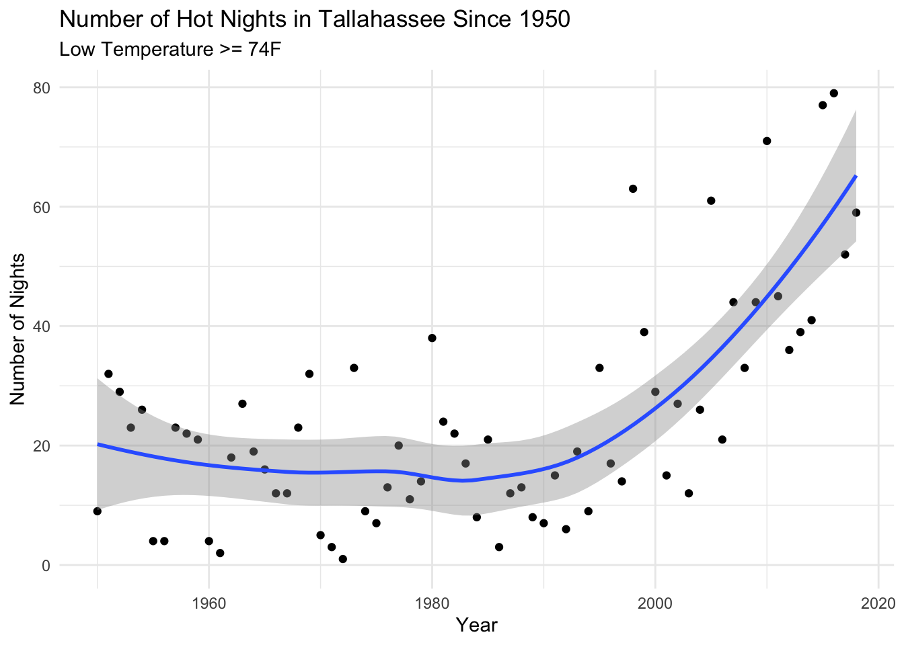
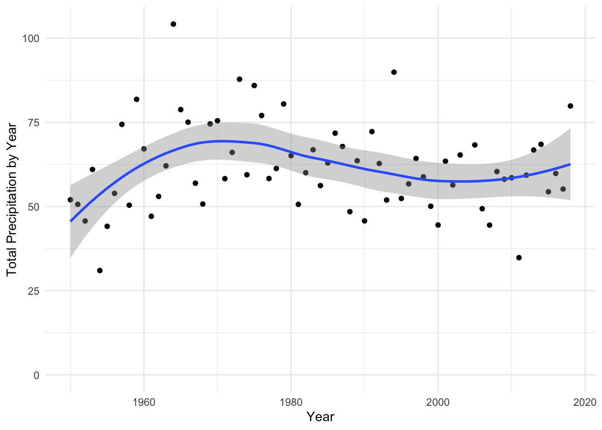

Tuesday, September 12, 2022
Today
- Examples of data munging with functions from the {dplyr} package
You work with data frames. The functions are verbs. The verbs include:
| Verb | Description |
|---|---|
dplyr::select() |
selects columns; pick variables by their names |
dplyr::filter() |
filters rows; pick observations by their values |
dplyr::arrange() |
reorders rows |
dplyr::mutate() |
creates new columns; create new variables with functions of existing variables |
dplyr::summarize() |
summarizes values; collapse many values down to a single summary |
dplyr::group_by() |
allows operations to be grouped |
Syntax for the verb functions are the same:
Properties
* The first argument is a data frame. This argument is implied when using the |> (pipe) operator (also %>%).
* The subsequent arguments describe what to do with the data frame. You refer to columns in the data frame directly (without using $).
* The result is a new data frame
The properties make it easy to chain together simple lines of code to do something complex.
The five functions form the basis of a grammar for data. At the most basic level, you can alter a data frame in five useful ways: you can reorder the rows (arrange()), pick observations and variables of interest (filter() and select()), add new variables that are functions of existing variables (mutate()), or collapse many values to a summary (summarise()).
As a review consider again the Florida precipitation data set (http://myweb.fsu.edu/jelsner/temp/data/FLprecip.txt). Import the data as a data frame, select the columns April and Year, group by years > 1960, then summarize by computing the mean and variance of the April rainfall.
FLp.df <- readr::read_table(file = "http://myweb.fsu.edu/jelsner/temp/data/FLprecip.txt")##
## ── Column specification ────────────────────────────────────────────────────────
## cols(
## Year = col_double(),
## Jan = col_double(),
## Feb = col_double(),
## Mar = col_double(),
## Apr = col_double(),
## May = col_double(),
## Jun = col_double(),
## Jul = col_double(),
## Aug = col_double(),
## Sep = col_double(),
## Oct = col_double(),
## Nov = col_double(),
## Dec = col_double()
## )FLp.df |>
dplyr::select(Apr, Year) |>
dplyr::group_by(Year > 1960) |>
dplyr::summarize(Avg = mean(Apr),
Var = var(Apr))## # A tibble: 2 × 3
## `Year > 1960` Avg Var
## <lgl> <dbl> <dbl>
## 1 FALSE 3.14 2.61
## 2 TRUE 2.66 2.07Example 1: New York City flight data
Let’s consider the flights data frame from the package {nycflights13}.
library(nycflights13)
dim(flights)## [1] 336776 19The data contains all 336,776 flights that departed NYC in 2013 and comes from the U.S. Bureau of Transportation Statistics. More information is available by typing ?nycflights13.
The object flights is a tibble (tabled data frame). When we have a large data frame it is useful to make it a tibble.
head(flights)## # A tibble: 6 × 19
## year month day dep_time sched_dep_time dep_delay arr_time sched_arr_time
## <int> <int> <int> <int> <int> <dbl> <int> <int>
## 1 2013 1 1 517 515 2 830 819
## 2 2013 1 1 533 529 4 850 830
## 3 2013 1 1 542 540 2 923 850
## 4 2013 1 1 544 545 -1 1004 1022
## 5 2013 1 1 554 600 -6 812 837
## 6 2013 1 1 554 558 -4 740 728
## # … with 11 more variables: arr_delay <dbl>, carrier <chr>, flight <int>,
## # tailnum <chr>, origin <chr>, dest <chr>, air_time <dbl>, distance <dbl>,
## # hour <dbl>, minute <dbl>, time_hour <dttm>The function filter() selects a set of rows in a data frame. How would you select all flights occurring on February 1st?
flights |>
dplyr::filter(month == 2 &
day == 1)## # A tibble: 926 × 19
## year month day dep_time sched_dep_time dep_delay arr_time sched_arr_time
## <int> <int> <int> <int> <int> <dbl> <int> <int>
## 1 2013 2 1 456 500 -4 652 648
## 2 2013 2 1 520 525 -5 816 820
## 3 2013 2 1 527 530 -3 837 829
## 4 2013 2 1 532 540 -8 1007 1017
## 5 2013 2 1 540 540 0 859 850
## 6 2013 2 1 552 600 -8 714 715
## 7 2013 2 1 552 600 -8 919 910
## 8 2013 2 1 552 600 -8 655 709
## 9 2013 2 1 553 600 -7 833 815
## 10 2013 2 1 553 600 -7 821 825
## # … with 916 more rows, and 11 more variables: arr_delay <dbl>, carrier <chr>,
## # flight <int>, tailnum <chr>, origin <chr>, dest <chr>, air_time <dbl>,
## # distance <dbl>, hour <dbl>, minute <dbl>, time_hour <dttm>The function arrange() reorders the rows. If you provide more than one column name as arguments, each additional column is used to break ties in the values of the preceding columns.
How would you arrange all flights in descending order of departure delay?
flights |>
dplyr::arrange(desc(dep_delay))## # A tibble: 336,776 × 19
## year month day dep_time sched_dep_time dep_delay arr_time sched_arr_time
## <int> <int> <int> <int> <int> <dbl> <int> <int>
## 1 2013 1 9 641 900 1301 1242 1530
## 2 2013 6 15 1432 1935 1137 1607 2120
## 3 2013 1 10 1121 1635 1126 1239 1810
## 4 2013 9 20 1139 1845 1014 1457 2210
## 5 2013 7 22 845 1600 1005 1044 1815
## 6 2013 4 10 1100 1900 960 1342 2211
## 7 2013 3 17 2321 810 911 135 1020
## 8 2013 6 27 959 1900 899 1236 2226
## 9 2013 7 22 2257 759 898 121 1026
## 10 2013 12 5 756 1700 896 1058 2020
## # … with 336,766 more rows, and 11 more variables: arr_delay <dbl>,
## # carrier <chr>, flight <int>, tailnum <chr>, origin <chr>, dest <chr>,
## # air_time <dbl>, distance <dbl>, hour <dbl>, minute <dbl>, time_hour <dttm>Often you work with large data sets with many columns but only a few are of interest. The function select() allows us to zoom in on an interesting subset of the columns.
How would you create a data frame containing only the dates, carrier, and flight numbers?
df <- flights |>
dplyr::select(year:day, carrier, flight)
df## # A tibble: 336,776 × 5
## year month day carrier flight
## <int> <int> <int> <chr> <int>
## 1 2013 1 1 UA 1545
## 2 2013 1 1 UA 1714
## 3 2013 1 1 AA 1141
## 4 2013 1 1 B6 725
## 5 2013 1 1 DL 461
## 6 2013 1 1 UA 1696
## 7 2013 1 1 B6 507
## 8 2013 1 1 EV 5708
## 9 2013 1 1 B6 79
## 10 2013 1 1 AA 301
## # … with 336,766 more rowsNote here the sequence operator : to get all columns between the column labeled year and the column labeled day.
How many distinct carriers are there?
df |>
dplyr::distinct(carrier) |>
nrow()## [1] 16You include new columns with the function mutate(). Compute the time gained during flight by subtracting the departure delay (minutes) from the arrival delay.
flights |>
dplyr::mutate(gain = arr_delay - dep_delay) |>
dplyr::select(year:day, carrier, flight, gain) |>
dplyr::arrange(desc(gain))## # A tibble: 336,776 × 6
## year month day carrier flight gain
## <int> <int> <int> <chr> <int> <dbl>
## 1 2013 11 1 VX 399 196
## 2 2013 4 18 AA 707 181
## 3 2013 8 8 UA 996 165
## 4 2013 7 10 DL 1465 161
## 5 2013 6 27 MQ 3199 157
## 6 2013 7 22 DL 1619 154
## 7 2013 7 1 DL 2395 153
## 8 2013 7 10 EV 4580 150
## 9 2013 7 22 MQ 2793 150
## 10 2013 4 18 AA 2083 148
## # … with 336,766 more rowsDetermine the average departure delay.
flights |>
dplyr::summarize(avgDelay = mean(dep_delay, na.rm = TRUE))## # A tibble: 1 × 1
## avgDelay
## <dbl>
## 1 12.6Note that if there are missing values in a vector the function mean() needs to include the argument na.rm = TRUE otherwise the output will be NA.
y <- c(5, 6, 7, NA)
mean(y)## [1] NAmean(y, na.rm = TRUE)## [1] 6You use sample_n() and sample_frac() to take random sample of rows from the data frame. Take a random sample of five rows from the flights data frame.
flights |>
dplyr::sample_n(5)## # A tibble: 5 × 19
## year month day dep_time sched_dep_time dep_delay arr_time sched_arr_time
## <int> <int> <int> <int> <int> <dbl> <int> <int>
## 1 2013 11 14 1547 1550 -3 1733 1745
## 2 2013 9 11 1229 1238 -9 1319 1354
## 3 2013 7 31 1451 1452 -1 1725 1747
## 4 2013 1 10 1145 1145 0 1322 1321
## 5 2013 4 27 941 950 -9 1230 1252
## # … with 11 more variables: arr_delay <dbl>, carrier <chr>, flight <int>,
## # tailnum <chr>, origin <chr>, dest <chr>, air_time <dbl>, distance <dbl>,
## # hour <dbl>, minute <dbl>, time_hour <dttm>Take a random sample of 1% of the rows.
flights |>
dplyr::sample_frac(.01)## # A tibble: 3,368 × 19
## year month day dep_time sched_dep_time dep_delay arr_time sched_arr_time
## <int> <int> <int> <int> <int> <dbl> <int> <int>
## 1 2013 11 27 1854 1900 -6 2132 2131
## 2 2013 1 25 552 600 -8 644 709
## 3 2013 1 9 658 700 -2 834 839
## 4 2013 4 19 1805 1800 5 1914 1919
## 5 2013 4 23 1600 1545 15 1805 1745
## 6 2013 6 14 1708 1715 -7 1820 1829
## 7 2013 7 27 2358 2359 -1 336 344
## 8 2013 9 10 1512 1453 19 1750 1811
## 9 2013 3 30 1901 1905 -4 2039 2114
## 10 2013 3 15 1910 1905 5 2011 2028
## # … with 3,358 more rows, and 11 more variables: arr_delay <dbl>,
## # carrier <chr>, flight <int>, tailnum <chr>, origin <chr>, dest <chr>,
## # air_time <dbl>, distance <dbl>, hour <dbl>, minute <dbl>, time_hour <dttm>Use the argument replace = TRUE to perform a bootstrap sample. More on this later.
Random samples are important to modern data science.
The verbs are powerful when you apply them to groups of observations within a data frame. This is done with the function group_by(). Determine the average arrival delay by airplane (tail number).
flights |>
dplyr::group_by(tailnum) |>
dplyr::summarize(delayAvg = mean(arr_delay, na.rm = TRUE)) |>
dplyr::arrange(desc(delayAvg))## # A tibble: 4,044 × 2
## tailnum delayAvg
## <chr> <dbl>
## 1 N844MH 320
## 2 N911DA 294
## 3 N922EV 276
## 4 N587NW 264
## 5 N851NW 219
## 6 N928DN 201
## 7 N7715E 188
## 8 N654UA 185
## 9 N665MQ 175.
## 10 N427SW 157
## # … with 4,034 more rowsDetermine the number of distinct planes and flights by destination location.
flights |>
dplyr::group_by(dest) |>
dplyr::summarize(planes = dplyr::n_distinct(tailnum),
flights = dplyr::n())## # A tibble: 105 × 3
## dest planes flights
## <chr> <int> <int>
## 1 ABQ 108 254
## 2 ACK 58 265
## 3 ALB 172 439
## 4 ANC 6 8
## 5 ATL 1180 17215
## 6 AUS 993 2439
## 7 AVL 159 275
## 8 BDL 186 443
## 9 BGR 46 375
## 10 BHM 45 297
## # … with 95 more rowsRepeat but arrange from most to fewest planes.
Example 2: Daily weather data from Tallahassee
Let’s consider another set of data. Daily high and low temperatures and precipitation in Tallahassee.
The file (TLH_SOD1892.csv) is available in this project in the folder data).
Import the data as a data frame.
TLH.df <- readr::read_csv(file = "data/TLH_SOD1892.csv")## Rows: 47056 Columns: 13
## ── Column specification ────────────────────────────────────────────────────────
## Delimiter: ","
## chr (2): STATION, NAME
## dbl (10): LATITUDE, LONGITUDE, ELEVATION, PRCP, TAVG, TMAX, TMIN, WDF1, WSF...
## date (1): DATE
##
## ℹ Use `spec()` to retrieve the full column specification for this data.
## ℹ Specify the column types or set `show_col_types = FALSE` to quiet this message.The data frame contains daily high (TMAX) and low (TMIN) temperatures and total precipitation (PRCP) from two stations: Airport with STATION identification USW00093805 and downtown with STATION identification USC00088754.
Use the select() function to create a new data frame with only STATION, DATE, PRCP, TMAX and TMIN.
TLH.df <- TLH.df |>
dplyr::select(STATION, DATE, PRCP, TMAX, TMIN)
TLH.df## # A tibble: 47,056 × 5
## STATION DATE PRCP TMAX TMIN
## <chr> <date> <dbl> <dbl> <dbl>
## 1 USW00093805 1940-03-01 0 72 56
## 2 USW00093805 1940-03-02 0 77 53
## 3 USW00093805 1940-03-03 0.05 73 56
## 4 USW00093805 1940-03-04 0 72 44
## 5 USW00093805 1940-03-05 0 61 45
## 6 USW00093805 1940-03-06 0 66 40
## 7 USW00093805 1940-03-07 0 72 36
## 8 USW00093805 1940-03-08 0 56 41
## 9 USW00093805 1940-03-09 0 60 33
## 10 USW00093805 1940-03-10 0 72 32
## # … with 47,046 more rowsNote that you’ve recycled the name of the data frame. You started with TLH.df containing all the columns and we ended with TLH.df with only the columns selected.
Then use the filter() function to keep only days at or above 90F. Similarly you recycle the name of the data frame. Use the glimpse() function to take a look at the resulting data frame.
TLH.df <- TLH.df |>
dplyr::filter(TMAX >= 90) |>
dplyr::glimpse()## Rows: 10,632
## Columns: 5
## $ STATION <chr> "USW00093805", "USW00093805", "USW00093805", "USW00093805", "U…
## $ DATE <date> 1940-05-18, 1940-05-20, 1940-05-21, 1940-05-22, 1940-05-23, 1…
## $ PRCP <dbl> 0.00, 0.00, 0.00, 0.00, 0.00, 0.00, 0.00, 0.00, 0.45, 0.00, 0.…
## $ TMAX <dbl> 91, 92, 94, 93, 93, 90, 90, 91, 91, 91, 92, 95, 95, 95, 93, 91…
## $ TMIN <dbl> 53, 60, 67, 64, 71, 60, 58, 62, 68, 73, 71, 72, 72, 70, 72, 70…Note that the DATE column is a vector of dates having class date. Note if this were a character string you convert the character string into a date with the as.Date() function.
Functions from the {lubridate} package are used to extract information from dates. Here you add columns labeled Year, Month, and Day using the extractor functions year(), month(), etc.
library(lubridate)##
## Attaching package: 'lubridate'## The following objects are masked from 'package:base':
##
## date, intersect, setdiff, unionTLH.df <- TLH.df |>
dplyr::mutate(Year = year(DATE),
Month = month(DATE),
Day = day(DATE),
DoW = weekdays(DATE))
TLH.df## # A tibble: 10,632 × 9
## STATION DATE PRCP TMAX TMIN Year Month Day DoW
## <chr> <date> <dbl> <dbl> <dbl> <dbl> <dbl> <int> <chr>
## 1 USW00093805 1940-05-18 0 91 53 1940 5 18 Saturday
## 2 USW00093805 1940-05-20 0 92 60 1940 5 20 Monday
## 3 USW00093805 1940-05-21 0 94 67 1940 5 21 Tuesday
## 4 USW00093805 1940-05-22 0 93 64 1940 5 22 Wednesday
## 5 USW00093805 1940-05-23 0 93 71 1940 5 23 Thursday
## 6 USW00093805 1940-05-27 0 90 60 1940 5 27 Monday
## 7 USW00093805 1940-05-28 0 90 58 1940 5 28 Tuesday
## 8 USW00093805 1940-06-02 0 91 62 1940 6 2 Sunday
## 9 USW00093805 1940-06-14 0.45 91 68 1940 6 14 Friday
## 10 USW00093805 1940-06-17 0 91 73 1940 6 17 Monday
## # … with 10,622 more rowsNext you keep only the temperature record from the airport. You use the filter() function on the column labeled STATION.
TLH.df <- TLH.df |>
dplyr::filter(STATION == "USW00093805")Now what if you want to know how many hot days (90F or higher) by year? You use the group_by() function and count using the n() function.
TLH90.df <- TLH.df |>
dplyr::group_by(Year) |>
dplyr::summarize(nHotDays = dplyr::n())
TLH90.df## # A tibble: 79 × 2
## Year nHotDays
## <dbl> <int>
## 1 1940 63
## 2 1941 96
## 3 1942 75
## 4 1943 101
## 5 1944 95
## 6 1945 83
## 7 1946 71
## 8 1947 94
## 9 1948 97
## 10 1949 70
## # … with 69 more rowsNote that the group_by() function results in a data frame with the first column the variable used inside the function. In this case it is Year. The next columns are defined by what is in the summarize() function.
Repeat but this time group by Month.
TLH.df |>
dplyr::group_by(Month) |>
dplyr::summarize(nHotDays = dplyr::n())## # A tibble: 8 × 2
## Month nHotDays
## <dbl> <int>
## 1 3 2
## 2 4 102
## 3 5 778
## 4 6 1523
## 5 7 1794
## 6 8 1746
## 7 9 1119
## 8 10 157As expected the number of 90F+ days is highest in July and August. Note that you’ve had 90F+ days in October.
Would you expect there to be more hot days on the weekend? How would you check this?
TLH.df |>
dplyr::group_by(Year, DoW) |>
dplyr::summarize(nHotDays = dplyr::n())## `summarise()` has grouped output by 'Year'. You can override using the
## `.groups` argument.## # A tibble: 553 × 3
## # Groups: Year [79]
## Year DoW nHotDays
## <dbl> <chr> <int>
## 1 1940 Friday 10
## 2 1940 Monday 10
## 3 1940 Saturday 7
## 4 1940 Sunday 8
## 5 1940 Thursday 9
## 6 1940 Tuesday 11
## 7 1940 Wednesday 8
## 8 1941 Friday 17
## 9 1941 Monday 12
## 10 1941 Saturday 13
## # … with 543 more rowsYou can group by more than one variable. For example, add the variable Year to the group_by() function above.
Recall that you can also arrange() the data frame ordered according to the values in a particular column.
TLH90.df |>
dplyr::arrange(desc(nHotDays))## # A tibble: 79 × 2
## Year nHotDays
## <dbl> <int>
## 1 2016 134
## 2 1990 129
## 3 2011 125
## 4 1993 119
## 5 2010 118
## 6 2015 118
## 7 2018 118
## 8 1986 116
## 9 2007 116
## 10 2000 115
## # … with 69 more rowsPutting everything together
Let’s put together your first piece of original research. You know how to import a data file, you know how to manipulate the data frame to compute something of interest, and you know how to make a graph.
Let’s do this for the number of hot days. Let’s say you want a plot of the annual number of hot days in Tallahassee since 1950. Let’s define a hot day as one where the high temperature is at least 90F.
library(ggplot2)
readr::read_csv(file = "data/TLH_SOD1892.csv") |>
dplyr::filter(STATION == "USW00093805",
TMAX >= 90) |>
dplyr::mutate(Year = year(DATE)) |>
dplyr::filter(Year >= 1950) |>
dplyr::group_by(Year) |>
dplyr::summarize(nHotDays = dplyr::n()) |>
ggplot(aes(x = Year, y = nHotDays)) +
geom_point() +
geom_smooth() +
scale_y_continuous(limits = c(0, NA)) +
ylab("Number of Days") +
ggtitle("Number of Hot Days in Tallahassee Since 1950",
subtitle = "High Temperature >= 90F") +
theme_minimal()## Rows: 47056 Columns: 13
## ── Column specification ────────────────────────────────────────────────────────
## Delimiter: ","
## chr (2): STATION, NAME
## dbl (10): LATITUDE, LONGITUDE, ELEVATION, PRCP, TAVG, TMAX, TMIN, WDF1, WSF...
## date (1): DATE
##
## ℹ Use `spec()` to retrieve the full column specification for this data.
## ℹ Specify the column types or set `show_col_types = FALSE` to quiet this message.
## `geom_smooth()` using method = 'loess' and formula 'y ~ x'
You go from data in a file to a plot of interest with a set of functions that are logically ordered and easy to read.
What would you change to make a similar plot for the number of hot nights (say where the minimum temperature fails to drop below 74)?
readr::read_csv(file = "data/TLH_SOD1892.csv") |>
dplyr::filter(STATION == "USW00093805",
TMIN >= 74) |>
dplyr::mutate(Year = year(DATE)) |>
dplyr::filter(Year >= 1950) |>
dplyr::group_by(Year) |>
dplyr::summarize(nHotNights = dplyr::n()) |>
ggplot(aes(x = Year, y = nHotNights)) +
geom_point() +
geom_smooth() +
scale_y_continuous(limits = c(0, NA)) +
ylab("Number of Nights") +
ggtitle("Number of Hot Nights in Tallahassee Since 1950",
subtitle = "Low Temperature >= 74F") +
theme_minimal()## Rows: 47056 Columns: 13
## ── Column specification ────────────────────────────────────────────────────────
## Delimiter: ","
## chr (2): STATION, NAME
## dbl (10): LATITUDE, LONGITUDE, ELEVATION, PRCP, TAVG, TMAX, TMIN, WDF1, WSF...
## date (1): DATE
##
## ℹ Use `spec()` to retrieve the full column specification for this data.
## ℹ Specify the column types or set `show_col_types = FALSE` to quiet this message.
## `geom_smooth()` using method = 'loess' and formula 'y ~ x'
Make a similar plot showing the total precipitation by year.
readr::read_csv(file = "data/TLH_SOD1892.csv") |>
dplyr::filter(STATION == "USW00093805") |>
dplyr::mutate(Year = year(DATE)) |>
dplyr::filter(Year >= 1950) |>
dplyr::group_by(Year) |>
dplyr::summarize(TotalPrecip = sum(PRCP)) |>
ggplot(aes(x = Year, y = TotalPrecip)) +
geom_point() +
geom_smooth() +
scale_y_continuous(limits = c(0, NA)) +
ylab("Total Precipitation by Year") +
theme_minimal()## Rows: 47056 Columns: 13
## ── Column specification ────────────────────────────────────────────────────────
## Delimiter: ","
## chr (2): STATION, NAME
## dbl (10): LATITUDE, LONGITUDE, ELEVATION, PRCP, TAVG, TMAX, TMIN, WDF1, WSF...
## date (1): DATE
##
## ℹ Use `spec()` to retrieve the full column specification for this data.
## ℹ Specify the column types or set `show_col_types = FALSE` to quiet this message.
## `geom_smooth()` using method = 'loess' and formula 'y ~ x'## Warning: Removed 1 rows containing non-finite values (stat_smooth).## Warning: Removed 1 rows containing missing values (geom_point).
Example 3: Food consumption and CO2 emissions
Source: https://www.nu3.de/blogs/nutrition/food-carbon-footprint-index-2018
fc.df <- readr::read_csv('https://raw.githubusercontent.com/rfordatascience/tidytuesday/master/data/2020/2020-02-18/food_consumption.csv')## Rows: 1430 Columns: 4
## ── Column specification ────────────────────────────────────────────────────────
## Delimiter: ","
## chr (2): country, food_category
## dbl (2): consumption, co2_emmission
##
## ℹ Use `spec()` to retrieve the full column specification for this data.
## ℹ Specify the column types or set `show_col_types = FALSE` to quiet this message.head(fc.df)## # A tibble: 6 × 4
## country food_category consumption co2_emmission
## <chr> <chr> <dbl> <dbl>
## 1 Argentina Pork 10.5 37.2
## 2 Argentina Poultry 38.7 41.5
## 3 Argentina Beef 55.5 1712
## 4 Argentina Lamb & Goat 1.56 54.6
## 5 Argentina Fish 4.36 6.96
## 6 Argentina Eggs 11.4 10.5Consumption is kg/person/year and CO2 emission is kg CO2/person/year.
- How many different countries are in the data frame?
fc.df |>
dplyr::distinct(country) |>
nrow()## [1] 130- Arrange the countries from most pork consumption per person to the least pork consumption.
fc.df |>
dplyr::filter(food_category == "Pork") |>
dplyr::select(country, consumption) |>
dplyr::arrange(desc(consumption))## # A tibble: 130 × 2
## country consumption
## <chr> <dbl>
## 1 Hong Kong SAR. China 67.1
## 2 Austria 52.6
## 3 Germany 51.8
## 4 Spain 48.9
## 5 Poland 46.2
## 6 Lithuania 45.7
## 7 Luxembourg 43.6
## 8 Croatia 42.8
## 9 Czech Republic 41.2
## 10 Belarus 40.4
## # … with 120 more rows- Arrange the countries from the largest carbon footprint with respect to eating habits to the smallest carbon footprint.
fc.df |>
dplyr::rename(co2_emission = co2_emmission) |>
dplyr::group_by(country) |>
dplyr::summarize(totalEmission = sum(co2_emission)) |>
dplyr::arrange(desc(totalEmission))## # A tibble: 130 × 2
## country totalEmission
## <chr> <dbl>
## 1 Argentina 2172.
## 2 Australia 1939.
## 3 Albania 1778.
## 4 New Zealand 1751.
## 5 Iceland 1731.
## 6 USA 1719.
## 7 Uruguay 1635.
## 8 Brazil 1617.
## 9 Luxembourg 1598.
## 10 Kazakhstan 1575.
## # … with 120 more rowsSummary
Data munging is a big part of data science. Data science is an iterative cycle:
- Generate questions about our data.
- Search for answers by transforming, visualizing, and modeling the data.
- Use what you learn to refine our questions and/or ask new ones.
You use questions as tools to guide our investigation. When you ask a question, the question focuses our attention on a specific part of our data set and helps us decide what to do.
For additional practice please check out http://r4ds.had.co.nz/index.html.
Cheat sheets http://rstudio.com/cheatsheets